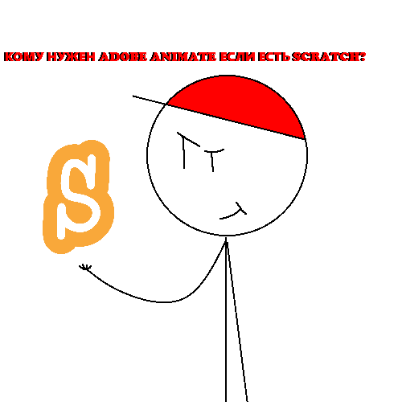
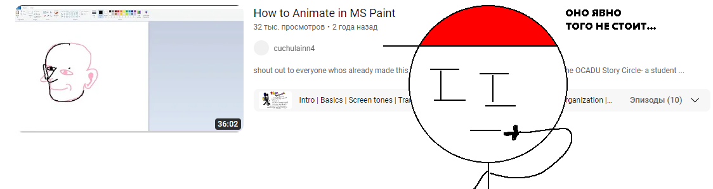

О бо мне:
Меня зовут Никита Белькевич (Известный под псевдонимом Somario06).Я занимаюсь созданием анимаций.
Я поведаю о том как их создавать.
Лично для себя я предпочёл использовать для создания анимаций такую программу как scratch. 
Многие люди считают что для создания необходим Adobe Animate, но это не так. Для создания анимаций можно использовать даже Paint. Однако вам нужно иметь очень много терпения и желания. 
Как создать анимацию?
- Зайдите на сайт scratch
- Зарегистрируйтесь или ввойдите в акаунт
- Создайте проект
- Начните творить
- Завершите ваше творение
- Запишите вашу анимацию на OBS
Как работает моя анимация.
scratch это язык "програмирования". Его код состоит из блоков.
пример работы такого кода.